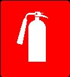
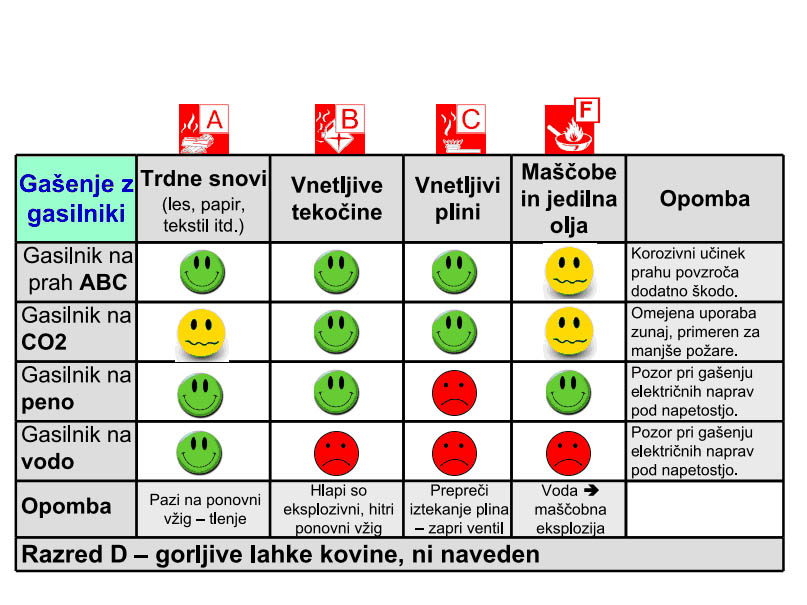

ROČNI GASILNI APARATI
Mnogokrat so poimenovani s kratico RGA. Narejeni so za vsestransko uporabo. Uporablja ga lahko vsak laik, ki ima dovolj moči, da ga dvigne in premakne ter da je pred tem prebral navodila za uporabo, ki so na posameznem gasilnem aparatu.
RGA je pripomoček, ki je v predpisih jasno definiran in predviden za vse javne ustanove, trgovine, podjetja … Priporočen (ni obvezno) je tudi v vsakem gospodinjstvu, počitniški prikolici, avtomobilu … Statistika jasno dokazuje, da vsak požar, pogašen v začetni fazi, zahteva majhno sanacijo, medtem ko požari, ki jih ne gasimo v začetni fazi, pogosto prerasejo v dimenzije, kjer je potrebna gasilska intervencija.
Določitev števila in vrste gasilnika
Omenjena pravila glede gasilnikov so podana v pravilniku o izboru in namestitvi ročnih gasilnih aparatov (Ur. l. RS, št. 67/2005). S pravilnikom se določajo merila za izbiro in namestitev gasilnikov za začetno gašenje požarov kot obvezne opreme stavb glede na požarno nevarnost in površino. Pravilnik v prilogah dodaja tudi zahteve za določitev števila gasilnikov oziroma tako imenovanih enot gasila (EG). Enota gasila je gasilna učinkovitost gasilnega medija v gasilniku. Določajo jo s požarnimi preizkusi, ki jih opredeljuje standard.
Kot že omenjeno, tega ni treba upoštevati v domačem okolju. Eden izmed razlogov je tudi pestrost ali raznoterost opreme, pripomočkov …, za katere je težko določiti idealni gasilnik in predvsem njihovo število v gospodinjstvu.
Podlago za lažjo odločitev je treba poiskati v namembnosti objekta …, za domače okolje se priporoča kombinacija gasilnikov...
- En gasilnik na prašek ABC in en gasilnik na vodo ali peno sta v gospodinjstvu popolnoma dovolj, če imate doma dodatni CO2-gasilnik, pa je dom popolnoma varen.
- Pri gospodarskih poslopjih je treba dodati vsaj še po en gasilnik ABC 6EG.
- Pri vikendih (ne prevelikih dimenzij) en gasilnik na prašek ABC 6EG.
- Kurilnica ali manjša delavnica – en gasilnik na prašek ABC 6 EG.
- Za osebna vozila gasilnik na prašek ABC 4 EG.
- Za požare maščob in olj je potreben dodatni gasilnik, ki je poseben (razred F). Lahko pa ga uspešno nadomestimo s požarno odejo.
Pred nakupom se vsekakor priporoča pogovor z gasilci, ki vam bodo znali svetovati pravilen nakup glede na tip objekta.

Slika 1: Oznaka mesta gasilnega aparata
TIPI IN VRSTE GASILNIKOV
Na trgu je zelo veliko različnih gasilnikov. V poplavi tujih trgovskih mrež potrošnik več ne ve, kaj izbrati, kar je popolnoma razumljivo. Zaradi nerazumevanja so gasilniki razvrščeni po gasilnih sposobnostih. Gorljive snovi se razdelijo v razrede, na podlagi katerih se potrošnik/uporabnik lažje odloča pri nakupu in o uporabi gasilnika, ko ga potrebuje.
Razredi gorljivih snovi:
A: trdne snovi (les, papir, tekstil...)
B: vnetljive tekočine (alkohol, bencin, nafta...)
C: vnetljivi plini (metan, propan-butan, acetilen...)
D: lahke kovine (aluminij, magnezij...)
F: jedilna olja in maščobe
Snovi so razdeljene v razrede, gasilniki pa glede na tip gasilnega sredstva, in sicer:
Gasilnik na prah (s stalnim tlakom ali z ampulo) (S)
Gasilnik na ogljikov dioksid (CO2)
Gasilnik na vodo (V)
Gasilnik na peno (PZ)
Za lažjo odločitev, kateri gasilnik uporabiti za katero snov, je prikazana spodnja tabela.

Slika 2: Prikaz primernosti posameznega gasilnega medija, glede na vrsto goriva